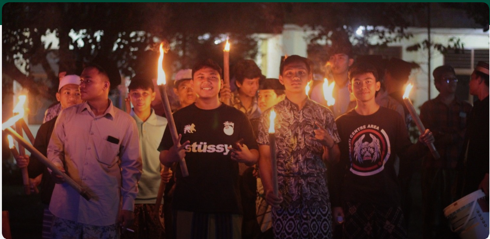

Berita
Semarak Takbir dan Cahaya Obor Warnai Malam Idul Adha di Pondok Pesantren Darussalam

Purwokerto — Cahaya obor dan lantunan takbir mewarnai suasana malam di lingkungan Pondok Pesantren Darussalam Dukuh Waluh Purwokerto pada Selasa, 26 Mei 2026. Dalam rangka menyambut Hari Raya Idul Adha 1447 H, Pondok Pesantren Darussalam kembali menggelar kegiatan Gema Takbir Keliling dan Pawai Obor sebagai bentuk syiar Islam sekaligus ruang kebersamaan antara pesantren dan masyarakat sekitar. Kegiatan ini diikuti oleh warga Desa Dukuh Waluh, santri Pondok Pesantren Darussalam, serta santri TPQ Darussalam. Sejak pukul 19.00 WIB, para peserta mulai berkumpul di halaman pondok pesantren dengan penuh antusias. Suasana kebersamaan tampak terasa sejak awal, ketika santri, anak-anak TPQ, dan masyarakat hadir bersama untuk mengikuti rangkaian acara. Acara diawali dengan pembukaan oleh pembawa acara. Setelah itu, kegiatan dilanjutkan dengan penampilan Pagar Nusa yang menambah semangat para peserta sebelum pawai dimulai. Penampilan tersebut menjadi salah satu bagian yang turut menghidupkan suasana malam takbiran di lingkungan pesantren. Rangkaian acara kemudian dilanjutkan dengan sambutan oleh Gus Imam Labib Hibaurrohman, Lc., M.S.I. Dalam sambutannya, beliau menyampaikan pesan tentang pentingnya menjaga syiar Islam, memperkuat kebersamaan, serta melaksanakan takbir keliling dengan tertib, aman, dan penuh tanggung jawab. Setelah sambutan, kegiatan dilanjutkan dengan prosesi simbolis penyalaan api obor. Prosesi ini menjadi tanda dimulainya Gema Takbir Keliling dan Pawai Obor. Para peserta kemudian berjalan bersama mengikuti rute yang telah disiapkan oleh panitia sambil mengumandangkan takbir. Sepanjang perjalanan, suasana religius dan penuh kekompakan tampak menyertai langkah para peserta. Cahaya obor yang dibawa peserta menjadi simbol semangat dalam menyambut hari raya, sekaligus menghadirkan nuansa khas malam takbiran yang hangat dan berkesan. Melalui kegiatan ini, Pondok Pesantren Darussalam berharap tradisi Gema Takbir Keliling dapat terus menjadi ruang kebersamaan yang positif. Kegiatan ini juga menjadi sarana pembinaan karakter bagi santri dan anak-anak TPQ agar terbiasa menjaga ketertiban, kekompakan, serta semangat syiar Islam di tengah masyarakat. Gema Takbir Keliling dan Pawai Obor Darussalam menjadi momen yang mempertemukan pesantren, santri, TPQ, dan masyarakat Dukuh Waluh dalam suasana religius, tertib, dan penuh kebersamaan. Kegiatan tahunan ini diharapkan terus terjaga sebagai tradisi baik yang mempererat hubungan Pondok Pesantren Darussalam dengan masyarakat sekitar.